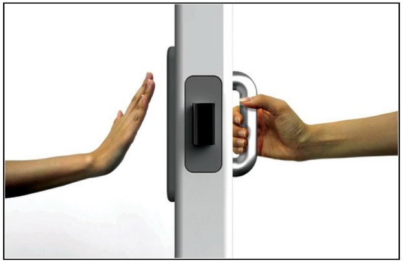
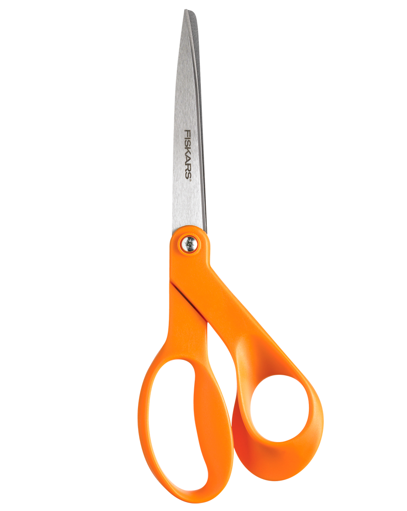

Design & Presentation
Interaction design & usability
"The human mind is exquisitely tailored to make sense of the world. Give it the slightest clue and off it goes, providing explanation, rationalization and understanding."
– Donald A. Norman, The Design of Everyday Things
Well designed objects:
- Are easy to understand & interpret
- Contain visible clues to their operation
Poorly designed objects:
- Are difficult & frustrating to use
- Provide no clues or false clues for operation

Wrong or confusing signals!

That's better!
Psychology of design: key ideas
(Not as scary as it sounds!)
1. Conceptual model
Good conceptual model: allows us to predict the effects of our actions
Bad conceptual model: confusion!

2. Affordances &
Constraints
Affordances
Constraints
3. Mappings
Unnatural
Natural

Feedback

But what about web design?
Possible actions
(i.e. physical affordances)
- Looking
- Clicking
- Pointing
- Typing (long)

Possible actions
(i.e. physical affordances)
- Looking
- Touching/tapping
- Pinching/zooming
- Typing (short)

But design on screen isn't physical. So we rely on conventions
(i.e. perceived affordances)
Click on this
link!
link!
(obviously clickable)
Click on this
link?
(not so much)
Tip for basic interactions:
Don't make me think!
 Via Don't Make Me Think
Via Don't Make Me Think
Goals:
- Communicate purpose
- Orient the user
Communicate purpose
News!
Portfolio!
Shopping!
The right indicator for the right action

The right indicator for the right action

Orient the user